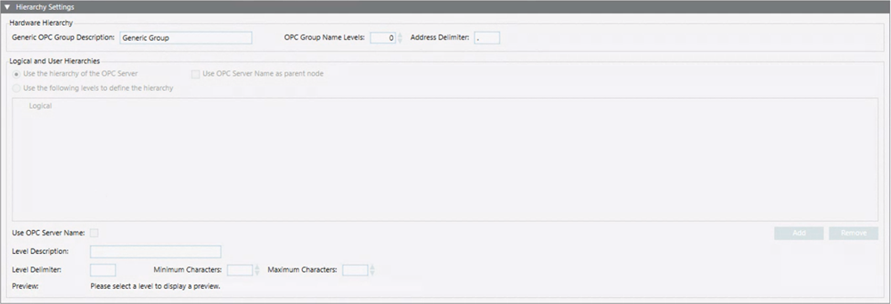
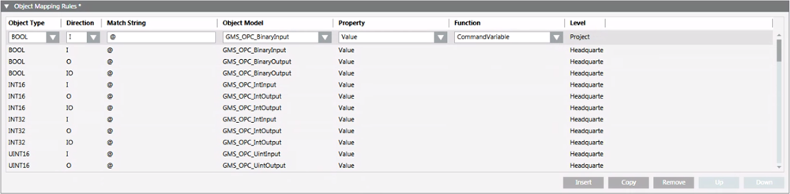

Third-party OPC DA Discovery Rules Workspace
Desigo CC discovery rules feature allows customizing and creating discovery rules for an OPC discovery rules library, and editing or modifying library settings, hierarchy settings, and object mapping rules. It also allows creating additional discovery rules for a library so that you can select which rules will be used when importing OPC Items. For instructions, see the step-by-step section. Note that, if needed, you can add more than one OPC DA discovery rules library element to the OPC discovery rules folder.
OPC DA Discovery Rules Library Settings
The Library Settings expander allows defining the string to match for the rule to be applied. The matching string will be mapped on the name of the discovered OPC server.
You have to modify the default library name and enter a match string. A tooltip tells you the prefixes supported:
*Match Anywhere (contains)
^ Match beginning
$ Match ending
@ Always match
In a string, a number can be represented by the following characters: \#.
NOTE: This setting cannot be changed for a customized library (Match String field disabled).
OPC DA Discovery Rules Hierarchy Settings
The Hierarchy Settings expander allows specifying how to build the hierarchies in Management View, in the logical view, or in a user-defined view.

For the hardware (physical) hierarchy that will be imported into Management View, you can specify the name to use for the generic OPC group, the number of levels of the OPC Items address from which the OPC groups name will be generated, and the characters to be used as delimiters.
- If the OPC Group Name Levels field contains 0, only the generic OPC group will be created and any OPC items will belong to it.
- Based on the defined levels, if an OPC Item cannot belong to any of the defined OPC groups, the generic OPC group will be created and the OPC item will be included here.
For the hierarchies of the logical view or of a user-defined view, you can set one of the following options:
- Use the hierarchy of the OPC Server: by default, the radio button Use OPC Server Name as parent node is cleared and the hierarchy of the OPC server as obtained after the browse of the OPC items is used.
- Use the hierarchy of the OPC Server and Use OPC Server Name as parent node: when both the options are selected, the hierarchy of the OPC server as obtained after the browse of the OPC items is used. Additionally, an aggregator with the name of the OPC server will be used as parent node of the hierarchy.
- Use the following levels to define the hierarchy: the hierarchy will be built up base on the following rules:
- Up to 10 levels can be defined.
- For each level you can define the following settings: Level Description, Level Delimiter (that identifies the part of the address to use for each level), Minimum Characters and Maximum Characters (to be used for each level). Note that if the value of the Level Delimiter is not set, the Preview of the address broken into parts displays in red and a tooltip tells you that at least Minimum Characters and Maximum Characters values must be specified.
- Use OPC Server Name: This setting is enabled only for Level 1, and allows creating an aggregator with the name of the OPC server as parent node of the hierarchy.
NOTE: The hierarchy settings data can be changed for a customized library. During the discovery operation, the rules of the lower customization level are applied. For example, if L1-Headquarter rules are customized at L2-Region and L4-Project, during the import L4-Project rules will be applied.
OPC DA Discovery Rules Object Mapping Rules
The Object Mapping Rules expander allows modifying the rules configuration.

- The Object Type and Direction combo boxes contain the values that are supported by the Desigo CC importer feature for OPC.
- The Match String field indicates the string that will be compared with the OPC item address. A tooltip tells you the prefixes supported:
- *Match Anywhere (contains)
- ^ Match beginning
- $ Match ending
- @ Always match
- In a string, a number can be represented by the following characters: \#.
- To represent a structured property, use the following characters at the end of the address: \&. See the following table for examples about the use of these characters.
An OPC server exposes the OPC items with the following addresses:
| ||
Case 1: Applying the following OPC discovery rules that use the standard delimiter (.) | ||
Match String | Object Model | Property |
$STATUS | GMS_OPC_Device_Terminal | Status |
$BATTERYTERMINAL.VALUE | GMS_OPC_Device_Terminal | Battery |
Result of Case 1: The following nodes will be created into the project | ||
Node | Object Model | Mapped Property |
Device_1_Terminals_1_Status | GMS_OPC_Device_Terminal | Status |
Device_1_Terminals_1_Battery | GMS_OPC_Device_Terminal | Battery |
Case 2: Applying the following OPC discovery rules that use the structured property delimiter (\&) | ||
Match String | Object Model | Property |
$STATUS | GMS_OPC_Device_Terminal | Status |
$BATTERYTERMINAL\&VALUE | GMS_OPC_Device_Terminal | Battery |
Result of Case 2: The following node will be created into the project | ||
Node | Object Model | Mapped Property |
Device_1_Terminals_1 | GMS_OPC_Device_Terminal | Status and Battery |
- The Object Model combo box contains the list of the object models of the current library.
- The Property combo box contains the list of the properties for the selected object model.
- The Function combo box contains the list of the functions for the selected object model. You can define the function that will be associated to the point type when imported. If a function has been deleted, its name is highlighted in red in the rules and an error is logged.
- The Level field is read-only and indicates the name of the level where the rule has been defined.
An OPC discovery rule works as follows:
- If an OPC Item has Object Type and Direction defined in the rule and its address matches the Match String thenthis OPC item will be imported using the selected Object Model and mapping the OPC item on the selected Property.
You can add a new rule after the one selected, copy the selected rule and add the copy after the selected rule, remove and move up or down the selected rule. Note that rules are evaluated top-down. Consequently, if more than one rule can be applied to the same OPC item, the rule on top is the one that will be used to import the OPC item.
NOTE: Mapping rules defined at upper customization levels cannot be modified for a customized library. In that case, you can only add a new rule or copy an existing rule. If the selected rule belongs to an upper level, the new rule or the copy of an existing rule is added at the beginning of the list. If the selected rule belongs to the current level, the new rule or the copy of an existing rule is added after the one selected. A rule can be removed and moved up or down only if it belongs to the current level.